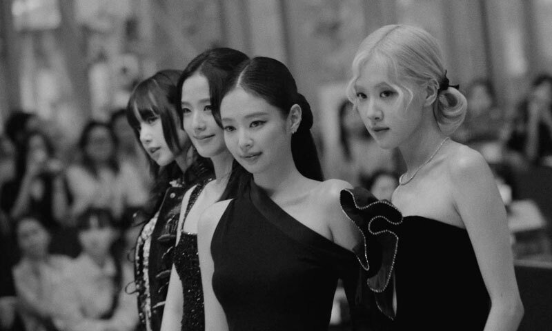

사진·영상 넣기 (본문 순서대로)
📷 사진 1

▲ 블랙핑크 네 멤버 지수·제니·로제·리사 · 사진=YG엔터테인먼트 제공
📷 사진 2

▲ '드라큘라'로 그래미 2개 부문 후보에 오른 제니 · 사진=OA엔터테인먼트 제공
▶ 영상 1
KBS 한국방송 · JISOO(BLACKPINK) 'ADDICTED' #뮤직뱅크 | KBS 261113 방송
https://youtu.be/160nK1V5Gow
블랙핑크가 YG엔터테인먼트 전속계약 명단에서 빠졌어요. 그럼 해체일까요? YG가 낸 공식 입장에는 '해체'도 '계약 종료'도 없고 그룹 활동을 "논의하고 있다"는 말이 들어 있어요. 무엇이 빠졌고 무엇이 남았는지 순서대로 짚어 봤어요.
📷 사진 1 자리
▲ 블랙핑크 네 멤버 지수·제니·로제·리사 · 사진=YG엔터테인먼트 제공
분기보고서에서 사라진 한 줄
YG가 11월 16일 공시한 3분기 보고서의 전속계약 현황에는 네 팀이 올라 있어요. 베이비몬스터, 위너, 은지원, 트레저예요. 9월 말 기준 명단이에요.
8월에 낸 반기보고서에는 블랙핑크까지 다섯 팀이었어요. 두 보고서 사이에 달라진 건 블랙핑크 한 줄뿐이에요.
2023년 계약은 처음부터 '그룹 활동'만
이 한 줄의 무게를 재려면 2023년 12월로 돌아가야 해요. 지수·제니·로제·리사 네 멤버는 그때 YG와 다시 계약했는데, 대상이 '그룹 활동'으로 한정됐어요.
개인 활동은 이 계약 밖이었어요. 네 멤버는 각자 다른 소속사에서 솔로 활동을 해 왔고 블랙핑크라는 팀 활동만 YG와 함께하는 구조였죠. 그러니 이번에 명단에서 빠진 건 멤버 개인이 아니라 그룹 계약 쪽이에요.
YG 입장, 어디까지 말했나
YG는 같은 날 공식 입장을 냈어요. "현재 블랙핑크 멤버들은 아티스트로서 개별 활동을 이어가고 있으며, 그룹 활동에 대해 논의하고 있다"는 문장이 중심이에요.
뒤에는 당분간 개인 활동에 전념하려는 멤버들의 뜻을 존중한다는 말이 붙었어요. 마지막은 "블랙핑크라는 이름 아래" 좋은 모습을 보여 드리기 위한 논의를 이어 가겠다는 내용이에요.
입장에는 명단에서 빠진 이유도, 재계약을 마쳤다는 말도 없어요. 반대로 계약이 끝났다는 말도 없고요. 지금 확인되는 건 '그룹 활동은 논의 중, 당분간은 개인 활동'까지예요.
네 멤버는 지금 각자 어디에
YG가 말한 개인 활동은 이번 주 소식에서도 바로 보여요. 제니는 '드라큘라'로 제69회 그래미 어워즈 '올해의 레코드' 등 2개 부문 후보에 올랐어요. 같은 곡은 빌보드 '핫 100' 3위를 지키고 있어요.
📷 사진 2 자리
▲ '드라큘라'로 그래미 2개 부문 후보에 오른 제니 · 사진=OA엔터테인먼트 제공
지수는 내년 미국 코첼라 페스티벌 라인업에 이름을 올렸고 KBS '뮤직뱅크' 11월 13일 방송에서 'ADDICTED' 무대를 했어요. 로제는 '2026 키즈 초이스 어워즈'에서 '페이보릿 여성 아티스트'를 받았어요. 리사도 개인 활동을 이어 가는 중이에요.
▶ 영상 1 자리
명단 제외라는 말보다 입장문 속 "블랙핑크라는 이름 아래"라는 표현이 더 눈에 들어와요. 결론이 나오기 전까지는 해체설 영상보다 네 멤버 각자의 일정을 따라가는 편이 블랙핑크 소식을 놓치지 않는 길이에요.
블랙핑크는 YG 전속계약 명단에서 빠졌지만, YG는 그룹 활동을 '논의 중'이라고 밝혔어요. 해체나 계약 종료라는 말은 없었어요. 가장 가까운 큰 일정은 제니가 후보로 오른 그래미 시상식으로, 2027년 2월 7일(현지 시각) 로스앤젤레스에서 열려요.
함께 보면 좋은 이슈
